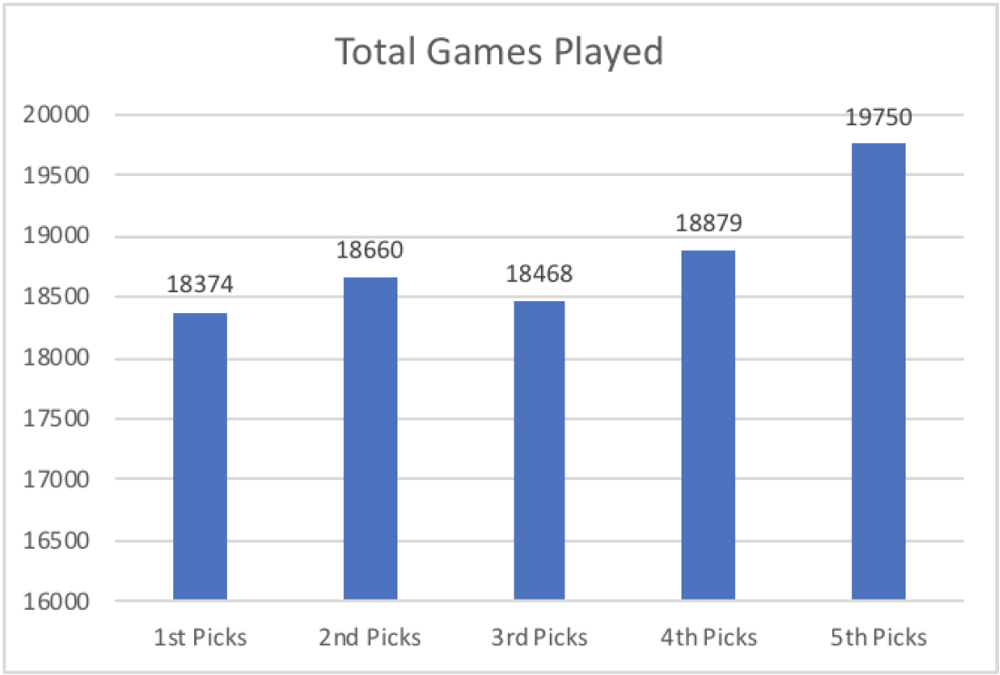

Which Pick is the Best?
By Emma Edelman | September 9, 2019

As the NBA season ends each year, every individual game becomes the determiner of close contests between teams for a spots in the playoffs. With winning the championship as the goal, teams battle to win as many games possible in order to achieve that very dream. However, some teams each year battle for a completely different goal. And yet again this year a select few teams have that very different goal in mind for the end of their season. Teams such as the Suns, Mavericks, Grizzlies, Knicks, Cavaliers, and the Bulls have all fought to have the worst season possible. Their ultimate prize being the worst record in the league and the highest chances of winning the coveted first pick in the NBA 2019 draft.
Purposefully trying to lose extra games in order to “tank” a season to secure a draft pick has been a strategy among NBA teams for decades. And for decades the league has worked to discourage tanking and encourage competitive play for all teams throughout the entirety of the season. Beginning in the mid-sixties and until the mid-eighties a coin flip determined who got the number one pick between the two lowest recorded teams. In the mid-eighties the first version of the lottery system emerged that gave all the non playoff teams an equal chance at the top pick. This led to the currently used system today: the weighted lottery. Every non playoff team gets a chance at the number one pick, but the teams with worse the record a team has, the better chance they have at winning the top pick. The odds have been adjusted once before, and now for the 2019 lottery they have been altered again. For the first time in the 2019 draft, the three teams with the lowest records will all receive an equal 14% chance at winning the first pick with the odds decreasing for every team after.
But despite knowing the odds aren’t much better for the teams with the worst records, teams still have chosen to tank in order to receive what they believe is the best pick. But what actually is the best pick? Long-term, do players picked first achieve more than those picked after them?
In order to examine the differences between the first few picks in the draft, we look at the career performances of all the players picked in the top five while the weighted lottery system has been used, a total of twenty eight years. For all five picks, statistics measuring the general success of each player were collected: total games played, career average points per game, career total number of points scored, career total number of rebounds, career total number of blocks, and total number of All Star selections for each player.
First looking at cumulative points scored by all draft picks since 1990 we see that first picks easily outscore the next highest picks by over eighty thousand points. But all of the next four picks are within half that range, forty thousand points, of each other. Additionally, the number of points scored doesn’t decrease linearly with the lower picks, the second highest scoring pick is actually the third, followed by the fifth, fourth, and second picks.
And looking at the average career PPG for each draft pick, the first pick leads by a large margin, averaging over 10% higher than the next closest pick. And again third pick is the next highest with the fourth, second, and fifth picks after it.
With two more statistics, total rebounds and total blocks, the pattern holds true with first picks with a significant lead in both rebounds and blocks. Total blocks and rebounds display once again that in individual statistics, first picks edge out second and third. But previously where third picks had come in second, they place fifth and fourth in rebounds and blocks, respectively.
To compare overall level of talent for each of the picks, number of total All Star selections for each draft pick was collected. Here the biggest difference between first and all other picks is revealed. First picks have been named as All Star selections almost double the amount of times of the next highest pick. The remainder of picks have a much smaller range with the fourth pick coming in last and the third and fifth picks neck and neck for second place.

Lastly, one final data point gives a completely different trend than all other statistics. In regards to the total number of games the top five pick players have played, the fifth pick players win by a large amount. In fact the fifth pick players played over 7.2% more games than the first pick players. The graph shows a upward trend as the draft picks become higher and higher, creating the conclusion that the later the player is picked the more games they are likely to play in their career.
So what pick is truly the best? Statistically, first picks outshine all over picks in terms of quality; first picks score, rebound, and block more often by a significant margin than all others. And first pick players are selected as all stars at least double the frequency of any other pick. But the data reveals that there is no clear downward trend after the first pick. Second picks are not consistently better than third picks, or third picks than fourth picks, or so forth on any statistical measure. In terms of quantity the reverse is true; there is an upward trend with the fifth picked players playing more games than any pick before them. So after looking at all the statistics, it is clear that the first pick gives teams the best chance at an All Star caliber player, but after the first pick is given out there is little to no advantage in obtaining any of the other highest picks rather than another.